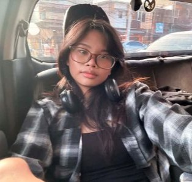

Home
About Me
My name is Kezia Aparri, and I am a student with a strong interest in technology and science. I recently graduated from high school and am continuing my education through online learning. I enjoy studying software development because it allows me to develop problem-solving and programming skills. In addition to technology, I am interested in chemistry and biochemistry and hope to combine my knowledge of science and technology in the future. My long-term goal is to build a successful career and eventually start a business in the pharmaceutical industry. I am a hardworking and determined learner who values education, personal growth, and service. I enjoy taking on new challenges, learning new skills, and finding ways to improve myself both academically and personally.
Student Photo
